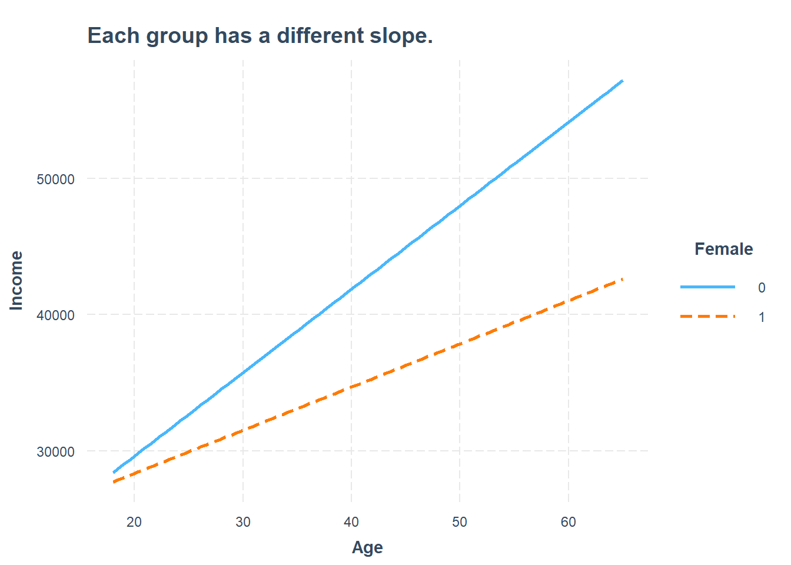
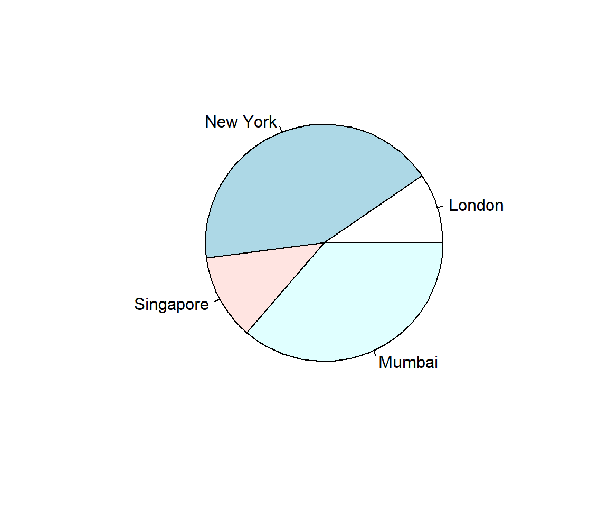

Software
Data analysis in this book is carried out with code. The software chapter introduces the tools before the first substantive part of the book begins.
The aim is not to learn software for its own sake. R and the Tidyverse provide a transparent way to move between a question, the data, the calculation, and the result. Later software-related topics—such as projects, packages, reproducibility, and troubleshooting—can be added here without interrupting the substantive chapters.
Why code?
A point-and-click program can produce an answer. Code leaves a visible trail.
A script records how data were imported, cleaned, transformed, visualised, and analysed. It allows us to repeat the same steps, modify them, identify mistakes, and share the complete process with others.
This is one reason code fits the dolphin perspective so well. A graph or model summary gives us a view at the surface. The code allows us to dive into how that result was produced.
Using code supports:
- transparency;
- reproducibility;
- scalability;
- collaboration;
- documentation; and
- flexibility.
Why R?
This book uses R.
Many of its ideas could also be implemented in Python or other languages. The most important decision here is not that one language must defeat all others. It is the decision to work with an open programming language rather than relying exclusively on proprietary, point-and-click statistical software.
R is free and open source. It has a large community and a broad ecosystem for data preparation, visualisation, statistics, modelling, reporting, and teaching. The same environment can take us from raw data to a graph, a model, an interactive exercise, or an entire book.
This eBook is itself produced with R, R Markdown, and Bookdown.
Why the Tidyverse?
This book predominantly uses the tidyverse.
The tidyverse offers a relatively consistent and readable language for common data tasks. Functions such as filter(), select(), mutate(), and summarise() describe recognisable actions, while ggplot2 builds visualisations from a systematic grammar.
This can lower the barrier at the surface. Beginners can often recognise what a sequence of code is trying to do before they understand every technical detail of R.
But the tidyverse is not the boundary of the ocean.
Base R, specialised packages, model-specific syntax, and mathematical notation will appear whenever they help answer the question at hand. The aim is not loyalty to one syntax. The aim is to use tools that make an analysis understandable, reliable, and useful.
Intro to R
An .R file is a text document. Open (and edit) it with a text editor, a web browser or a more sophisticated software like RStudio.1
Click this link that opens an R script in your browser.
Using .R files or scripts offers efficiency, reproducibility, scalability, collaboration, documentation, and flexibility. They allow you to automate tasks, handle large datasets, collaborate with others, document your work, and customize solutions.
R is a calculator
R is a calculator. Use this R demo in the browser to explore basic features of R. Commands in the script.R tab are executed by the Run bottom. It runs the entire script and prints out results in the R Console. This setting is simplified but reflects the procedure in a more complex integrated developer environment (IDE) like RStudio. Test it.
Definition
Basic arithmetic operators are:
+Addition-Subtraction*Multiplication/Division^Exponent
R is more than a calculator
Your Turn: Adjust the code.
If you never saw R before, change the main title to what ever suits you or change the color option col from lightblue to aliceblue.
If you have some experience, order the bars using the sort() command.
Define objects
Define R objects for later use. Objects are case-sensitive (X is different from x). Objects can take any name, but its best to use something that makes sense to you, and will likely make sense to others who may read your code.
Numeric Variables
The standard assignment operator is <-, the equal sign = works as well. The code assigns the object a the value 2 and b the value 3. The sum is 5.
Logical Variables
Logical values are TRUE and FALSE. Abbreviations work. You can write T instead of TRUE.
> harvard <- TRUE # spacing doesn't matter
> yale <- FALSE
> princeton <- F # short for FALSE
>
> # Attention: FALSE=0, TRUE=1
> harvard + 1
#> [1] 2Although spacing technically doesn't matter in R, there are some best practices to consider.
“Good coding style is like using correct punctuation. You can manage without it, but it sure makes things easier to read.”
Reading
Place spaces around all binary operators (=, +, -, <-, etc.). Do not place a space before a comma, but always place one after a comma.
Read more in Google's R Style Guide at Uni Stanford.
Factor Variables
A factor is an ordered categorical variable. c() is a generic function which combines its arguments.
fruit <- factor(c("banana", "apple") ) # The default ordering is alphabetic
fruit
#> [1] banana apple
#> Levels: apple banana
dose <- factor(c("low", "medium", "high") ) # The default ordering is alphabetic
dose
#> [1] low medium high
#> Levels: high low mediumFactor levels inform about the order of the components, i.e. apple comes before banana and high comes comes before low, than comes medium. Of course, the apple-banana order does not makes any sense, and the high-low-medium order is just wrong. Software cannot know whether an ordering makes sense, that's job of the data scientist. Use the levels option inside the factor() function to tell R the ordering.
Data frame
# think of it conceptually like a spreadsheet
dataDF <- data.frame(numberVec = vectorA,
trueFalseVec = vectorB,
stringsVec = vectorC)
# Examine an entire data frame
dataDF
#> numberVec trueFalseVec stringsVec
#> 1 1 TRUE She is a friend.
#> 2 2 TRUE she is a coworker
#> 3 3 FALSE people# Declare a new column
dataDF$NewCol <- c(10,9,8)
# Examine with new column
dataDF
#> numberVec trueFalseVec stringsVec NewCol
#> 1 1 TRUE She is a friend. 10
#> 2 2 TRUE she is a coworker 9
#> 3 3 FALSE people 8
# Examine a single column
dataDF$numberVec # by name
#> [1] 1 2 3
dataDF[,1] # by index...remember ROWS then COLUMNS
#> [1] 1 2 3
# Examine a single row
dataDF[2,] # by index position
#> numberVec trueFalseVec stringsVec NewCol
#> 2 2 TRUE she is a coworker 9
# Examine a single value
dataDF$numberVec[2] # column name, then position (2)
#> [1] 2
dataDF[1,2] #by index row 1, column 2
#> [1] TRUEPlots
There are base R graphs. There are ggplot2 plots.
# Create some variables
x <- 1:10
y1 <- x*x
y2 <- 2*y1
# Create a first line
plot(x, y1, type = "b", frame = FALSE, pch = 19,
col = "red", xlab = "x", ylab = "y")
# Add a second line
lines(x, y2, pch = 18, col = "blue", type = "b", lty = 2)
# Add a legend to the plot
legend("topleft", legend=c("Line 1", "Line 2"),
col=c("red", "blue"), lty = 1:2, cex=0.8)
Intro to Tidyverse
The tidyverse is a collection of R packages for data science that share a common philosophy and grammar.2 Once the package tidyverse is installed on your system via the command install.packages(tidyverse), it is loaded via library(tidyverse) in a session. Then you have access to all components like readr (for reading data), dplyr (for manipulating data), ggplot2 (for data visualization) and many more.
Data with readr
The readr package reads data into what is called a tibble.
A tibble is similar to a dataframe. When you print a tibble, it only shows the first ten rows and all the columns that fit on one screen. It also prints an abbreviated description of the column type, and uses font styles and color for highlighting. So to say, the default behavior is excellent.
# load the entire tidyverse
library(tidyverse)
# read_csv is a tidyverse (readr) function
coursedata <- read_csv("https://raw.githubusercontent.com/MarcoKuehne/marcokuehne.github.io/main/data/Course/GF_2022_57.csv")
# print a tibble
coursedata
#> # A tibble: 57 × 8
#> Academic.level Gender Age Total.Semesters Background.in.Statistics
#> <chr> <chr> <dbl> <dbl> <dbl>
#> 1 Bachelor Female 23 8 2
#> 2 Bachelor Female 22 10 4
#> 3 Master Male 23 9 4
#> 4 Master Male 24 2 3
#> 5 Master Male 27 10 2
#> 6 Master Male 23 7 3
#> 7 Bachelor Female 20 5 2
#> 8 Bachelor Female 22 8 2
#> 9 Master Male 27 13 4
#> 10 Master Female 22 10 4
#> # ℹ 47 more rows
#> # ℹ 3 more variables: Background.in.R <dbl>,
#> # Background.in.Academic.Writing <dbl>, Expectations <chr>When you use the base R read.csv() instead, it reads data into a dataframe. When you print the dataframe, it displays all data at once (output not shown in the book). In order to show first entries, another command like head() is necessary.
# use base R utilities
coursedata <- read.csv("https://raw.githubusercontent.com/MarcoKuehne/marcokuehne.github.io/main/data/Course/GF_2022_57.csv")
# print a dataframe (all data)
coursedata
# print first 6 observations of the data
head(coursedata)Reading
There are three key differences between tibbles and data frames: printing, subsetting, and recycling rules. Read more about those difference in the vignette of tibble.
Verbs of dplyr
The first verbs you learn for data inspection are glimpse(), select(), arrange() and filter(). Those are classic operators that you also find in Microsoft Excel (via clicking the correct menu options).
Glimpse
glimpse() tells the number of rows and columns, the first variable names, the class of the variables, i.e. chr for character (like text) or int for integer (like whole numbers). Another kind of variables are dbl, double, short for double-precision floating-point format.
This data set contains 57 rows (observations) and 9 columns (variables). glimpse() also shows the first observations for each variable.
glimpse(coursedata)
#> Rows: 57
#> Columns: 8
#> $ Academic.level <chr> "Bachelor", "Bachelor", "Master", "Mast…
#> $ Gender <chr> "Female", "Female", "Male", "Male", "Ma…
#> $ Age <dbl> 23, 22, 23, 24, 27, 23, 20, 22, 27, 22,…
#> $ Total.Semesters <dbl> 8, 10, 9, 2, 10, 7, 5, 8, 13, 10, 8, 8,…
#> $ Background.in.Statistics <dbl> 2, 4, 4, 3, 2, 3, 2, 2, 4, 4, 2, 2, 2, …
#> $ Background.in.R <dbl> 2, 3, 2, 1, 1, 1, 3, 1, 4, 4, 1, 2, 2, …
#> $ Background.in.Academic.Writing <dbl> 2, 2, 4, 3, 4, 2, 3, 2, 4, 3, 1, 2, 3, …
#> $ Expectations <chr> "I want to be efficient in my knowledge…Select
Columns are selected by name or column index. Thus, the outcome of select(coursedata, Gender, Age) and select(coursedata, 2, 3) is identical.
select(coursedata, Gender, Age)
#> # A tibble: 57 × 2
#> Gender Age
#> <chr> <dbl>
#> 1 Female 23
#> 2 Female 22
#> 3 Male 23
#> 4 Male 24
#> 5 Male 27
#> 6 Male 23
#> 7 Female 20
#> 8 Female 22
#> 9 Male 27
#> 10 Female 22
#> # ℹ 47 more rowsWe can use a minus - to get rid of a column and leave the rest of the columns:
Arrange
Often we are interested in the maximum or minimum age, thus arrange() a numerical value.
arrange(coursedata, Age) # from low to high Age
#> # A tibble: 57 × 8
#> Academic.level Gender Age Total.Semesters Background.in.Statistics
#> <chr> <chr> <dbl> <dbl> <dbl>
#> 1 Bachelor Female 20 5 2
#> 2 Master Female 21 7 2
#> 3 Bachelor Male 21 2 3
#> 4 Bachelor Female 21 4 2
#> 5 Bachelor Female 21 3 2
#> 6 Bachelor Male 21 1 2
#> 7 Bachelor Female 21 1 3
#> 8 Bachelor Female 22 10 4
#> 9 Bachelor Female 22 8 2
#> 10 Master Female 22 10 4
#> # ℹ 47 more rows
#> # ℹ 3 more variables: Background.in.R <dbl>,
#> # Background.in.Academic.Writing <dbl>, Expectations <chr>The default is from low to high values, the desc() options reverses the order.
Rename
Sometimes default variables names are too long or too complicated, thus we like to rename() them.
coursedata %>%
rename(Degree = Academic.level,
Semesters = Total.Semesters)
#> # A tibble: 57 × 8
#> Degree Gender Age Semesters Background.in.Statistics Background.in.R
#> <chr> <chr> <dbl> <dbl> <dbl> <dbl>
#> 1 Bachelor Female 23 8 2 2
#> 2 Bachelor Female 22 10 4 3
#> 3 Master Male 23 9 4 2
#> 4 Master Male 24 2 3 1
#> 5 Master Male 27 10 2 1
#> 6 Master Male 23 7 3 1
#> 7 Bachelor Female 20 5 2 3
#> 8 Bachelor Female 22 8 2 1
#> 9 Master Male 27 13 4 4
#> 10 Master Female 22 10 4 4
#> # ℹ 47 more rows
#> # ℹ 2 more variables: Background.in.Academic.Writing <dbl>, Expectations <chr>This change is only temporarily and shown in the console output. In order to keep the new name of a variable, we can overwrite the old R object or create a new one.
The pipe operator
As in base R, we often like to combine commands, e.g. select the Age variable and sort its values. dplyr verbs can be nested as in base R.
But there is something else that is used in tidyverse logic, the so called pipe operator %>% (percentage sign, relation larger than, another percentage sign). You can read this as "then, please do the following".
Filter
It is reasonable to filter() specific values of variables. All filters use conditional expression based on relational operators.
Definition
Use relational operators to build your filter:
==equal to!=not equal to>more or<less then
Here are some examples:
# filter students who have more than 10 semesters in total
coursedata %>% filter(Total.Semesters > 10)
# filter female students
coursedata %>% filter(Gender == "Female") Combinations of filters are possible via logical operators & (and) and | (or). We are looking for females who study in a master program.
coursedata %>%
filter(Gender == "Female" & Academic.level == "Master")
#> # A tibble: 12 × 8
#> Academic.level Gender Age Total.Semesters Background.in.Statistics
#> <chr> <chr> <dbl> <dbl> <dbl>
#> 1 Master Female 22 10 4
#> 2 Master Female 21 7 2
#> 3 Master Female 29 9 3
#> 4 Master Female 23 8 4
#> 5 Master Female 26 8 2
#> 6 Master Female 25 10 2
#> 7 Master Female 24 11 1
#> 8 Master Female 25 10 3
#> 9 Master Female 33 3 1
#> 10 Master Female 25 14 4
#> 11 Master Female 25 11 3
#> 12 Master Female 26 4 2
#> # ℹ 3 more variables: Background.in.R <dbl>,
#> # Background.in.Academic.Writing <dbl>, Expectations <chr>We are looking for females or anybody who reports more than 10 semesters.
coursedata %>%
filter(Gender == "Female" | Total.Semesters > 10)
#> # A tibble: 33 × 8
#> Academic.level Gender Age Total.Semesters Background.in.Statistics
#> <chr> <chr> <dbl> <dbl> <dbl>
#> 1 Bachelor Female 23 8 2
#> 2 Bachelor Female 22 10 4
#> 3 Bachelor Female 20 5 2
#> 4 Bachelor Female 22 8 2
#> 5 Master Male 27 13 4
#> 6 Master Female 22 10 4
#> 7 Bachelor Female 22 8 2
#> 8 Master Female 21 7 2
#> 9 Master Male 27 15 3
#> 10 Master Female 29 9 3
#> # ℹ 23 more rows
#> # ℹ 3 more variables: Background.in.R <dbl>,
#> # Background.in.Academic.Writing <dbl>, Expectations <chr>Mutate
mutate() is the most frequent used command you will come across. It changes the data. We create a new variable Background_Knowledge by taking the average of the three background variables. All background variables have the same range from 1 to 5.
coursedata %>%
mutate(Background_Knowledge = (Background.in.Statistics +
Background.in.R +
Background.in.Academic.Writing)/3) %>%
select(Academic.level, Gender, Age, Background_Knowledge)
#> # A tibble: 57 × 4
#> Academic.level Gender Age Background_Knowledge
#> <chr> <chr> <dbl> <dbl>
#> 1 Bachelor Female 23 2
#> 2 Bachelor Female 22 3
#> 3 Master Male 23 3.33
#> 4 Master Male 24 2.33
#> 5 Master Male 27 2.33
#> 6 Master Male 23 2
#> 7 Bachelor Female 20 2.67
#> 8 Bachelor Female 22 1.67
#> 9 Master Male 27 4
#> 10 Master Female 22 3.67
#> # ℹ 47 more rowsSummarize
Would you like to know the average age of course participants? It is 24.7192982 There are two ways in order to achieve this.
What is the difference between them? mutate() creates a new variable mean_age in the data set for all 57 observations. But there is only 1 mean value. Thus, mutate() repeats this mean value 57 times. The result is a 57x9 tibble. summarize() collapses the tibble to a single value. The result is a 1x1 tibble.
The question is, what do you plan to do next with your results. After summarize() all other information is gone. We will see this in the next graph.
Graphs with ggplot2
ggplot2 is a system for declaratively creating graphics, based on The Grammar of Graphics. You provide the data, tell ggplot2 how to map variables to aesthetics and what graphical primitives to use, and it takes care of the details. It is used by hundreds of thousands of people to make millions of plots.
ggplot() follows the Grammar of Graphics. The first argument is the data, the second is aes() aesthetics (that define the x- and y-variable). In order to add more to the graph, use the + operator (instead a pipe). Add layers, so called geoms, like geom_point() to create points in a coordinate system, a.k.a the scatter plot. theme_minimal() is a particular set of options that controls non-data display.

Alternatively, data can be piped into a ggplot(). In the second version of the graph, we added axis labels inside the labs() command and another layer geom_smooth() for a trend line of the relationship. Inside we define the method to be a linear model and the standard errors to be deactivated. Play around with those options, what other methods are available? What happens when we turn standard errors on?
coursedata %>%
ggplot(aes(x = Age, y = Total.Semesters)) +
geom_point() +
geom_smooth(method = "lm", se = FALSE) +
theme_minimal() +
labs(title = "Relationship between Age and Semester of course participants.", x = "Age", y = "Semesters")
Download RStudio https://posit.co/downloads/.↩︎